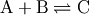
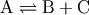
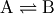

9. The rmg.reaction Module¶
Contains classes describing chemical reactions:
- Reaction - A general chemical reaction
- ReactionRecipe - A set of actions to take when applying a reaction
- ReactionFamily - A database of a general family of related reactions
- ReactionFamilySet - A set of reaction families
9.1. Classes in rmg.reaction¶
9.1.1. InvalidActionException¶
- class rmg.reaction.InvalidActionException(msg)¶
- An exception to be raised when an invalid action is encountered in a reaction recipe.
9.1.2. Reaction¶
- class rmg.reaction.Reaction(reactants=None, products=None, family=None, kinetics=None)¶
Represent a generic chemical reaction. The attributes are:
Attribute Description atomLabels A dictionary with the keys representing the labels and the values the atoms of the reactant or product species that were labeled at the time the reaction was generated bestKinetics The best kinetics for the reaction, always a derived class of kinetics.Kinetics family The reaction family that this reaction represents, as a pointer to a ReactionFamily object kinetics A list of all of the valid sets of kinetics for the reaction multiplier A multiplier to use to increase the reaction rate for cases when the reaction is generated multiple times due to different parts of the reactants yielding the same behavior products A list of the species that are produced by this reaction reactants A list of the species that are consumed by this reaction reverse A pointer to the reverse reaction, also a Reaction object canteraReaction A pointer to the corresponding reaction instance in Cantera By convention, the forward reaction is taken to be that for which the provided kinetics apply; the reverse kinetics are taken from thermodynamic reversibility. Lists of reactions in a model or mechanism should therefore only store the forward reaction. Note that the reverse reaction exists as a Reaction object in the reverse attribute because this is a convenient way to represent the reverse reaction.
- calculateMicrocanonicalRate(Elist, T, reacDensStates, prodDensStates=None)¶
- Calculate and return the microcanonical rate coefficients k(E) for the forward and reverse reactions from the high-pressure limit canonical rate coefficient k(T) using the inverse Laplace transform method. For dissociation reactions the reverse rate coefficient is actually the product of the reverse rate and the product equilibrium distribution.
- equivalent(other)¶
- Return True if the two reactions are equivalent (i.e. they have the same reactants and products and are of the same reaction family) and False otherwise.
- fromXML(document, rootElement)¶
- Convert a <reaction> element from a standard RMG-style XML input file into a Reaction object. document is an io.XML class representing the XML DOM tree, and rootElement is the <reaction> element in that tree.
- getBestKinetics(T, P=100000.0)¶
- Return the best set of ArrheniusKinetics parameters for the forward reaction evaluated at the temperature T. This function follows the convention that the forward reaction is the one for which we are using the kinetic expression, and that the reverse rate constant is evaluated using thermochemical equilibrium. Evans-Polyani ArrheniusEPKinetics are converted to ArrheniusKinetics using dHrxn(298K)
- getEnthalpyOfReaction(T)¶
- Return the enthalpy of reaction evaluated at temperature T.
- getEntropyOfReaction(T)¶
- Return the entropy of reaction evaluated at temperature T.
- getEquilibriumConstant(T, conc)¶
- Return the equilibrium constant K(T) evaluated at temperature T in a system with total concentration conc.
- getFreeEnergyOfReaction(T)¶
- Return the Gibbs free energy of reaction evaluated at temperature T.
- getRate(T, P, conc, totalConc=None)¶
Return the net rate of reaction at temperature T and pressure P. The parameter conc is a map with species as keys and concentrations as values. A reactant not found in the conc map is treated as having zero concentration.
If passed a totalConc, it won’t bother recalculating it.
- getRateConstant(T, P=100000.0)¶
- Return the value of the rate constant k(T) at the temperature T. The pressure P in Pa is not required.
- getStoichiometricCoefficient(spec)¶
- Return the stoichiometric coefficient of species spec in the reaction. The stoichiometric coefficient is increased by one for each time spec appears as a product and decreased by one for each time spec appears as a reactant.
- hasTemplate(reactants, products)¶
- Return True if the reaction matches the template of reactants and products, which are both lists of species.Species objects.
- isAssociation()¶
- Return True if the reaction is an association, i.e. has the form . Returns False otherwise.
- isBimolecular()¶
- Return True if the forward reaction has two reactants and False otherwise.
- isDissociation()¶
- Return True if the reaction is a dissocition, i.e. has the form . Returns False otherwise.
- isIsomerization()¶
- Return True if the reaction is an isomerization, i.e. has the form . Returns False otherwise.
- isUnimolecular()¶
- Return True if the forward reaction has one reactant and False otherwise.
- toCantera(T=1000, P=100000.0)¶
- Return a Cantera ctml_writer instance
9.1.3. ReactionException¶
- class rmg.reaction.ReactionException(reaction, message='')¶
- An base exception for reactions. Takes a reaction object, and optional message
9.1.4. ReactionFamily¶
- class rmg.reaction.ReactionFamily(label='', template='', recipe=None)¶
Represent a reaction family: a set of reactions with similar chemistry, and therefore similar reaction rates. Besides the dictionary, tree, and library inherited from data.Database, the attributes are:
Attribute Description label The name of the reaction family template A Reaction object representing the forward reaction template recipe A ReactionRecipe object representing the steps to take when applying the reaction to a set of reactants forbidden (Optional) A dictionary of forbidden product structures reverse A pointer to the reverse reaction family (or None if the family is its own reverse - applyRecipe(reactantStructures, unique=True)¶
- Apply the recipe for this reaction family to the list of structure.Structure objects reactantStructures. The atoms of the reactant structures must already be tagged with the appropriate labels. Returns a list of structures corresponding to the products after checking that the correct number of products was produced.
- averageKinetics(kinetics)¶
- Return the average kinetic parameters for the list of kinetic data kinetics.
- drawFullGraphOfTree()¶
- Create a PyDOT representation of the current tree.
- drawGraphOfTree(nodes)¶
- draw a graph of the tree
- generateMissingEntriesFromAbove(nodes)¶
- Generate a nonexisting entry in the library based on an averaging scheme.
- generateMissingEntriesFromBelow(nodes)¶
- Generate a nonexisting entry in the library based on an averaging scheme.
- generateProductTemplate()¶
- Generate the product structures by applying the reaction template to the top-level nodes. For reactants defined by multiple structures, only the first is used here; it is assumed to be the most generic.
- getKinetics(reaction, structures)¶
- Determine the appropriate kinetics for reaction which involves the labeled atoms in atoms.
- getReactionList(reactants)¶
- Generate a list of all of the possible reactions of this family between the list of reactants.
- getTemplateLists()¶
- Return lists containing the top-level nodes of each tree representing the reactants and the products. These lists are flattened versions of the lists available in self.template.reactants and self.template.products.
- load(path)¶
Load a reaction family located in the directory path.
- The family consists of the files::
- dictionary.txt tree.txt library.txt template.txt forbiddenGroups.txt
- loadTemplate(path)¶
- Load and process a reaction template file located at path. This file is part of every reaction family.
- makeReaction(reactants, reactantStructures, maps)¶
- Create a reaction involving a list of reactants. The reactantStructures parameter is a list of structures in the order the reactants are stored in the reaction family template, and the maps parameter is a list of mappings of the top-level tree node of each template reactant to the corresponding structure.
- processLibraryData()¶
- Convert the data in the library from a string/unicode object to either an ArrheniusEPKinetics object or a list of [link, comment] string pairs. This function is generally called in the course of loading a database from files.
- prune(template=None)¶
- Remove nodes from the tree and dictionary that are not referred to in the library. Nodes that are not referred to in the library but that have one or more descendants that are referred to in the library are retained. The template parameter is a list of the nodes at which to begin, e.g. the template lists returned from getTemplateLists().
- reactantMatch(reactant, templateReactant)¶
- Return True if the provided reactant matches the provided template reactant and False if not.
9.1.5. ReactionFamilySet¶
- class rmg.reaction.ReactionFamilySet¶
Represent a set of reaction families. The families attribute stores a dictionary of ReactionFamily objects representing the families in the set.
- getReactions(species)¶
- Generate a list of reactions that involve a list of one or two species as a reactant or product.
- load(datapath, only_families=False)¶
- Load a set of reaction families from the general database specified at datapath. If only_families is present, families not in this list will not be loaded (e.g. only_families=[‘H_Abstraction’] )
9.1.6. ReactionRecipe¶
- class rmg.reaction.ReactionRecipe(actions=None)¶
Represent a list of actions that, when executed, result in the conversion of a set of reactants to a set of products. There are currently five such actions:
Action Name Arguments Action CHANGE_BOND center1, order, center2 change the bond order of the bond between center1 and center2 by order; do not break or form bonds FORM_BOND center1, order, center2 form a new bond between center1 and center2 of type order BREAK_BOND center1, order, center2 break the bond between center1 and center2, which should be of type order GAIN_RADICAL center, radical increase the number of free electrons on center by radical LOSE_RADICAL center, radical decrease the number of free electrons on center by radical The actions are stored as a list in the actions attribute. Each action is a list of items; the first is the action name, while the rest are the action parameters as indicated above.
- addAction(action)¶
- Add an action to the reaction recipe.
- applyForward(struct, unique=True)¶
- Apply the reaction recipe to the set of molecules contained in structure, a single Structure object that contains one or more structures.
- applyReverse(struct, unique=True)¶
- Apply the reaction recipe to the set of molecules contained in structure, a single Structure object that contains one or more structures.
- getReverse()¶
- Generate a reaction recipe that, when applied, does the opposite of what the current recipe does, i.e., it is the recipe for the reverse of the reaction that this is the recipe for.
9.2. Methods in rmg.reaction¶
- rmg.reaction.makeNewReaction(reactants, products, reactantStructures, productStructures, family)¶
Attempt to make a new reaction based on a list of reactants and a list of products. The combination of these and a reaction family string uniquely identifies a reaction. The reactant and product lists must contain Species objects, not Structure objects.
The proposed reaction is checked against the list of existing reactions; if the reaction already exists, this function returns the existing reaction. If the reaction does not exist, a Reaction object is created and returned after being appended to the global reaction list.